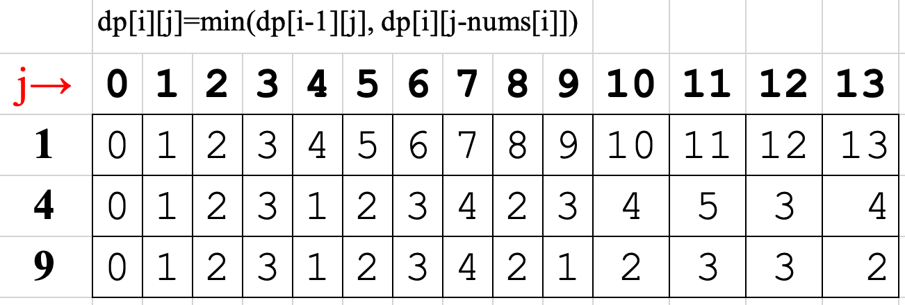
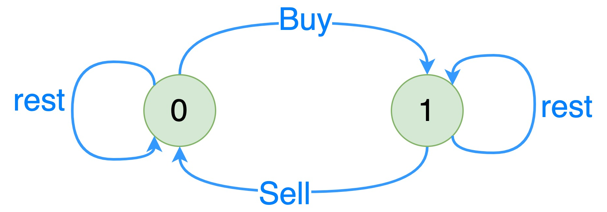
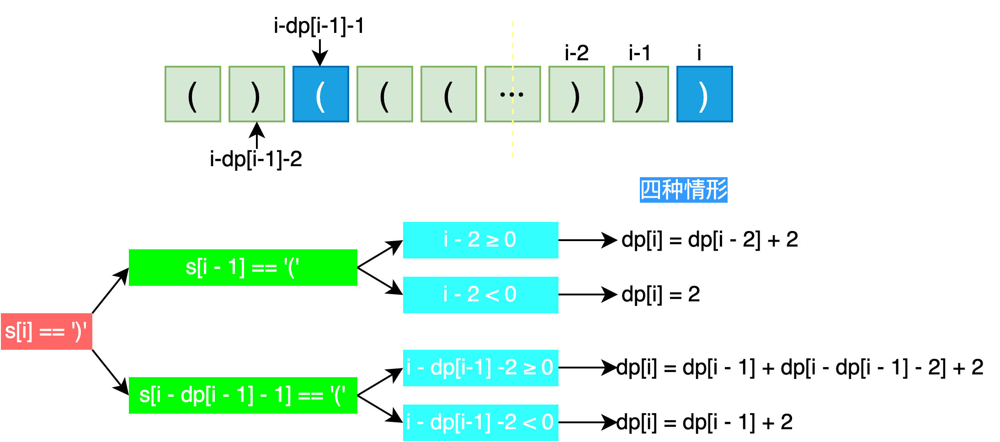

动态规划
基本方法
动态规划的的四个解题步骤是：
定义子问题: DP 数组及下标的含义
DP 数组初始化
写出子问题的递推关系
确定 DP 数组的计算顺序
空间优化（可选）
相关题目
背包问题
背包问题 (knapsack problem) 是一种*组合优化*的 *NP 完全*问题。
建模
假定我们有 \(N\) 种物品, 每种物品的重量为 \(w_i\) , 价格为 \(p_i\) , 背包所能装载的最大重量为 \(W\) , \(x_i\) 是装入背包的第 \(i\) 个物品的个数, 公式化表述
0-1 背包问题 : 每种物品只能选择 0 个或者 1 个
\[
\max{\sum_{i=1}^N} x_i p_i \quad s.t. \; \sum_{i=1}^N x_i w_i \leq W, \; x_i \in \{0, 1\}
\]
有界背包问题 : 又称多重背包问题, 每种物品最多只能选择 \(b_j\) 个
\[
\max{\sum_{i=1}^N} x_i p_i \quad s.t. \; \sum_{i=1}^N x_i w_i \leq W, \; x_i \in \{0, 1, \cdots , b_j\}
\]
无界背包问题 : 又称完全背包问题，不限定每种物品的数量
\[
\max{\sum_{i=1}^N} x_i p_i \quad s.t. \; \sum_{i=1}^N x_i w_i \leq W, \; x_i \in \{0, 1, \cdots , \infty \}
\]
0-1 背包
定义子问题
\(dp[i][v]\) : 表示从索引为 \(0 \sim i\) 的物品中任意取物品, 放进容量为 \(v\) 的背包价值总和的最大值.
状态转移方程
对于第 \(i\) 个物品，有取和不取两种状态, 以下分别讨论：
\[
dp[i][v]=\left\{
\begin{aligned}
&dp[i-1][v - w_i] + p_i, &取 \\
&dp[i-1][v] , &不取
\end{aligned}
\right.
\]
综上，状态转移方程为
\[dp[i][v] = \max(dp[i-1][v], dp[i-1][v-w_i] + p_i)\]
空间优化
空间优化是将二维 DP 数组降为一维。定义 \(dp[v]\) 表示容量为 \(v\) 的背包所装物品价值总和，则对应的状态转移方程为
\[dp[v] = \max(dp[v], dp[v-w_i] + p_i)\]
虽然上式的 “=” 左右两边都有 \(dp[v]\) , 但含义并不相同，等号左侧的 \(dp[v]\) 指的是当前轮，等号右侧的 \(dp[v]\) 其实是上一轮的结果。所以更准确的描述应该是
\[dp[v]^{(i)} = \max(dp[v]^{(i-1)}, dp[v-w_i]^{(i-1)} + p_i)\]
如果是顺序遍历, 则等号右侧的 \(dp[v]\) 就变成了当前轮的值, 不符合。而采用 倒序遍历 则可以避免这个问题。
二维 DP 一维 DP
def zero_one_knapsack_2d ( weights , prices , W ):
"""
Args:
weights (list): weights of goods
prices (list): prices of goods
W (int): the maximum capacity of knapsack
Returns:
int : the maximum value of things in knapsack
"""
m = len ( weights )
dp = np . zeros (( m + 1 , W + 1 )) # 第1行, 第1列都初始化为 0 方便计算
for i in range ( m ): # 物品
for v in range ( W + 1 ): # 背包容量
if weights [ i ] > v :
dp [ i + 1 ][ v ] = dp [ i ][ v ]
else :
dp [ i + 1 ][ v ] = max ( dp [ i ][ v ], dp [ i ][ v - weights [ i ]] + prices [ i ])
return dp [ - 1 , - 1 ]
def zero_one_knapsack_1d ( weights , prices , W ):
"""
Args:
weights (list): weights of goods
prices (list): prices of goods
W (int): the maximum capacity of knapsack
Returns:
int : the maximum value of things in knapsack
"""
m = len ( weights )
dp = np . zeros ( W + 1 )
for i in range ( m ): # 物品
for v in range ( W , weights [ i ] - 1 , - 1 ): # 背包容量, 倒序遍历
dp [ v ] = max ( dp [ v ], dp [ v - weights [ i ]] + prices [ i ])
return dp [ - 1 ]
题目：给你一个 只包含正整数的 非空 数组nums，请你判断是否可以将这个数组分割成两个子集，使得两个子集的元素和相等。
题目转化为: 从 nums 中抽取一些元素，使其和为 \(\frac{1}{2}\sum_i(nums[i])\) .
改题目有两种处理方法, 其差异在于定义动态规划数组状态的含义不同。
方法 1
\(dp[i][j]\) : 从索引为 \(0 \sim i\) 中的抽取的元素和 , 这样转化为标准的背包问题。
bool canPartition_v0 ( vector < int >& nums ) {
int sum = 0 ;
for ( int num : nums ) sum += num ;
bool flag = false ;
if ( sum % 2 ) {
return flag ;
}
int target = sum / 2 ;
vector < int > dp ( target + 1 , 0 );
for ( int i = 0 ; i < nums . size (); i ++ ) {
for ( int j = target ; j >= nums [ i ]; -- j ) {
dp [ j ] = max ( dp [ j ], dp [ j - nums [ i ]] + nums [ i ]);
}
}
if ( dp [ target ] == target ) {
flag = true ;
}
return flag ;
}
方法2
\(dp[i][j]\) : 从索引为 \(0 \sim i\) 中的抽取的元素之和恰好等于 \(j\) 的状态 。
\[
dp[i][j] = \left\{
\begin{aligned}
true, &\sum_k nums[k] = j \\
false, &\sum_k nums[k] \neq j
\end{aligned}
\right.
\]
题目: 向数组中的每个整数前添加 '+' 或 '-' ，然后串联起所有整数，可以构造一个表达式. 返回可以通过上述方法构造的、运算结果等于 target 的不同 表达式 的数目。
题目转化为: 从 nums 中抽取一些元素，使其和为 \(\frac{1}{2}\left(\sum_i(nums[i]) - target\right)\) .
状态定义与转移方程:
二维
\(dp(i, j)\) : 从 0~i 中抽取元素和为 j 的方案数\(dp(i, j) = dp(i - 1, j) + dp(i-1, j - nums[i])\)
一维
\(dp(j)\) : 从 0~i 中抽取元素和为 j 的方案数\(dp(j) = dp(j) + dp(j - nums[i])\)
完全背包
朴素解法
由于 0-1 背包对于 1 个物品有取和不取两种状态，而完全背包有取 \(0, 1, ..., \frac{v}{w[i]}\) 多种取法, 则可以直接修改 0-1 背包状态方程为
def unbounded_knapsack_naive ( weights , prices , W ):
"""
Args:
weights (list): weights of goods
prices (list): prices of goods
W (int): the maximum capacity of knapsack
Returns:
int : the maximum value of things in knapsack
"""
m = len ( weights )
dp = np . zeros ( W + 1 )
for i in range ( m ): # 物品
for v in range ( W , weights [ i ] - 1 , - 1 ): # 背包容量, 倒序遍历
for k in range ( v // weights [ i ] + 1 ): # 取 {0, 1, ..., v / w[i]} 个物品
dp [ v ] = max ( dp [ v ], dp [ v - k * weights [ i ]] + k * prices [ i ])
return dp [ - 1 ]
然而, 上述方法需要三重循环，效率比较低。由于完全背包的同一个物品可以拿取多个，对比 0-1 背包和完全背包 2D 的状态转移方程
\[
\begin{aligned}
0-1背包: &dp[i][v] = \max(dp[i-1][v], dp[i-1][v-w_i] + p_i) \\
完全背包: &dp[i][v] = \max(dp[i-1][v], dp[i][v-w_i] + p_i)
\end{aligned}
\]
完全背包的二维状态转移方程可以压缩成一维, 其形式跟 0-1 背包完全相同, 但含义有差别。具体体现在遍历顺序是 顺序遍历 .
def unbounded_knapsack ( weights , prices , W ):
"""
Args:
weights (list): weights of goods
prices (list): prices of goods
W (int): the maximum capacity of knapsack
Returns:
int : the maximum value of things in knapsack
"""
m = len ( weights )
dp = np . zeros ( W + 1 )
for i in range ( m ): # 物品
for v in range ( weights [ i ], W + 1 ): # 背包容量, 顺序遍历
dp [ v ] = max ( dp [ v ], dp [ v - weights [ i ]] + prices [ i ])
return dp [ - 1 ]

定义 DP 数组: \(dp(i, j)\) 或者 \(dp(j)\) 表示从索引为 0~i 中抽取元素的平方和为 j 的最少数量.
dp[j]: 从前 i 种硬币中组成金额 j 所需的最少硬币数量；
状态转移: dp[j] = min(dp[j], dp[j - coins[i]] + 1);
int coinChange ( vector < int >& coins , int amount ) {
vector < long long > dp ( amount + 1 , INT_MAX );
dp [ 0 ] = 0 ;
for ( int coin : coins ) {
for ( int i = coin ; i <= amount ; i ++ ) {
dp [ i ] = min ( dp [ i ], dp [ i - coin ] + 1 );
}
}
return dp [ amount ] > amount ? -1 : dp [ amount ];
}
多重背包
核心 : 二进制优化
股票问题
Leetcode 上股票买卖相关的问题有:
详细的解法参考了 一个方法团灭 LEETCODE 股票买卖问题 .
买卖股票的最佳时机 IV 是该系列题目的一般形式，其他题目可以改成是该题的特殊形式。以下的讨论都基于该题目。
题目 : 给定一个整数数组 prices ，它的第 i 个元素 prices[i] 是一支给定的股票在第 i 天的价格。 设计一个算法来计算你所能获取的最大利润。你最多可以完成 k 笔交易。
注意：你不能同时参与多笔交易（你必须在再次购买前出售掉之前的股票）。
约束条件
只有 \(0\sim N\) 天的股票价格；
购买前必须不持有股票，卖出前必须持有股票；
最多完成 \(K\) 笔较易.
状态定义
\(dp[i][k][j]\) 表示第 \(i\) 天收市后完成最多进行 \(k\) 次交易获得的最大收益。 其中 \(j \in \{0, 1\}\) , \(j=0\) 表示不持有股票，\(j=1\) 表示持有股票。
因此, \(dp[n][k][0]\) 为最后一天最多交易 \(K\) 次能获得的最大利润。
状态转移方程
为了解决上述问题，某天的持有状态转移图如下

\[
\begin{aligned}
dp[i][k][0] &= \max(dp[i - 1][k][0], dp[i - 1][k][1] + prices[i]) \\
dp[i][k][1] &= \max(dp[i - 1][k][1], dp[i - 1][k-1][0] - prices[i])
\end{aligned}
\]
初始化
\(dp[0][...][0] = 0\) \(dp[...][0][0] = 0\) \(dp[0][...][1] = -inf\) \(dp[...][0][1] = -inf\)
def maxProfit ( self , k : int , prices : List [ int ]) -> int :
import numpy as np
MAX_VALUE = 0xFFFFFFFFFFFFFFFF
n = len ( prices )
# initialize
dp = np . zeros (( n + 1 , k + 1 , 2 ), dtype = int )
dp [ 0 , :, 0 ] = 0
dp [:, 0 , 0 ] = 0
dp [ 0 , :, 1 ] = - MAX_VALUE
dp [:, 0 , 1 ] = - MAX_VALUE
# update status
for i in range ( 1 , n + 1 ):
price = prices [ i - 1 ]
for k in range ( 1 , k + 1 ):
dp [ i , k , 0 ] = max ( dp [ i - 1 , k , 0 ], dp [ i - 1 , k , 1 ] + price )
dp [ i , k , 1 ] = max ( dp [ i - 1 , k , 1 ], dp [ i - 1 , k - 1 , 0 ] - price )
return int ( dp [ n ][ k ][ 0 ])
由上可以看到，只要状态定义清楚，状态转移方程和代码变得相当优雅.
题目:
根据上述模板, 交易次数 \(k \rightarrow \inf\) , 则有 \(k \approx k-1\) , 从而可以消掉 k 这一维。
def maxProfit ( self , prices : List [ int ]) -> int :
import numpy as np
MAX_VALUE = 0xFFFFFFFFFFFFFFF
n = len ( prices )
# initialize
dp = np . zeros (( n + 1 , 2 ), dtype = int )
dp [ 0 , 0 ] = 0
dp [:, 0 ] = 0
dp [ 0 , 1 ] = - MAX_VALUE
dp [:, 1 ] = - MAX_VALUE
# update status
for i in range ( 1 , n + 1 ):
price = prices [ i - 1 ]
dp [ i , 0 ] = max ( dp [ i - 1 , 0 ], dp [ i - 1 , 1 ] + price )
dp [ i , 1 ] = max ( dp [ i - 1 , 1 ], dp [ i - 1 , 0 ] - price )
return int ( dp [ n , 0 ])
本题在 122.买卖股票的最佳时机 II 的基础上增加了冻结期 1 天, 代码唯一的差别如高亮行所示。
def maxProfit ( self , prices : List [ int ]) -> int :
import numpy as np
MAX_VALUE = 0xFFFFFFFFFFFFFFF
n = len ( prices )
# initialize
dp = np . zeros (( n + 1 , 2 ), dtype = int )
dp [ 0 , 0 ] = 0
dp [:, 0 ] = 0
dp [ 0 , 1 ] = - MAX_VALUE
dp [:, 1 ] = - MAX_VALUE
# update status
for i in range ( 1 , n + 1 ):
price = prices [ i - 1 ]
dp [ i , 0 ] = max ( dp [ i - 1 , 0 ], dp [ i - 1 , 1 ] + price )
dp [ i , 1 ] = max ( dp [ i - 1 , 1 ], ( 0 if i < 2 else dp [ i - 2 , 0 ]) - price )
return int ( dp [ n , 0 ])
本题在 122.买卖股票的最佳时机 II 的基础上增加了手续费。
注意 : 一次完整的交易的手续费指(买,卖) , 因此要么买入减去手续费, 要么卖出减去手续费。
代码唯一的差别如高亮行所示。
def maxProfit ( self , prices : List [ int ], fee : int ) -> int :
import numpy as np
MAX_VALUE = 0xFFFFFFFFFFFFFFF
n = len ( prices )
# initialize
dp = np . zeros (( n + 1 , 2 ), dtype = int )
dp [ 0 , 0 ] = 0
dp [:, 0 ] = 0
dp [ 0 , 1 ] = - MAX_VALUE
dp [:, 1 ] = - MAX_VALUE
# update status
for i in range ( 1 , n + 1 ):
price = prices [ i - 1 ]
dp [ i , 0 ] = max ( dp [ i - 1 , 0 ], dp [ i - 1 , 1 ] + price )
dp [ i , 1 ] = max ( dp [ i - 1 , 1 ], dp [ i - 1 , 0 ] - price - fee )
return int ( dp [ n , 0 ])
打家劫舍
子序列问题
53.最大子数组和
题目 : 给你一个整数数组 nums ，请你找出一个具有最大和的连续子数组（子数组最少包含一个元素），返回其最大和。
注: 子数组是数组中的一个连续部分。
示例:
解析
定义子问题 : dp[i]: 表示以 nums[i] 结尾 的连续子数组最大和状态转移方程 : 分两种情况讨论,
\[
\begin{equation*}
dp[i]=\left\{
\begin{aligned}
dp[i - 1] + nums[i]&, & dp[i - 1] \geq 0, \\
nums[i] &, & dp[i - 1] < 0.
\end{aligned}
\right.
\end{equation*}
\]
上式可以合并为一个公式 \(dp[i]=\max(dp[i-1] + nums[i], nums[i])\)
依据如上分析可以写出最原始的 DP 代码
152.乘积最大子数组
题目 : 给你一个整数数组 nums，请你找出数组中乘积最大的非空连续子数组(该子数组中至少包含一个数字)，并返回该子数组所对应的乘积。
示例:
解析:
基本的解题思路同 53_最大子数组和 , 但需要考虑 nums[i] 中分别为正数和负数的情形。
1. 若 nums[i] < 0, 且其前某段连续子数组之积也为负数，则负的绝对值越大，则其积越大;
2. 若 nums[i] > 0, 则期望其前某段连续子数组之积也为正数，正得越大，其积越大。
因此, 需要定义两个 DP, 即
\(DP_{max}\) : 表示以 nums[i] 结尾的积的最大值；\(DP_{min}\) : 表示以 nums[i] 结尾的积的最小值.
代码如下:
def maxProduct ( self , nums : List [ int ]) -> int :
prev_max = nums [ 0 ]
prev_min = nums [ 0 ]
res = nums [ 0 ]
for num in nums [ 1 :]:
curr_max = max ( prev_max * num , prev_min * num , num )
curr_min = min ( prev_max * num , prev_min * num , num )
res = max ( curr_max , res )
prev_max = curr_max
prev_min = curr_min
return res
300.最长递增子序列
题目 : 给你一个整数数组 nums ，找到其中最长严格递增子序列的长度。
说明: 子序列是由数组派生而来的序列，删除（或不删除）数组中的元素而不改变其余元素的顺序。例如，[3,6,2,7] 是数组 [0,3,1,6,2,2,7] 的子序列。
示例:
基础解法：动态规划
状态定义: dp[i] 表示以 nums[i] 结尾的最长上升子序列的长度;
状态转移方程: 当 \(nums[i] > nums[j]\) 时, \(dp[i] = \max(dp[j] + 1, dp[i]), j \in [0, i)\) , 其中 \(j<i\) ; 也即是说, 需 \(nums[i] > nums[j]\) 时, 才能将 \(nums[i]\) 放到 \(nums[0...j]\) 后面形成上升子序列 ;
初始状态: dp[i] 所有元素置 11，含义是每个元素都至少可以单独成为子序列，此时长度都为 1.
def lengthOfLIS ( self , nums : List [ int ]) -> int :
"""
dp[i]: 以 nums[i] 结尾的最长递增子序列的长度
"""
result = 0
dp = [ 1 ] * len ( nums )
for i , num in enumerate ( nums ):
# 对于每个 nums[i], 需从头开始遍历
for j in range ( i ):
if nums [ i ] > nums [ j ]:
dp [ i ] = max ( dp [ j ] + 1 , dp [ i ])
result = max ( dp [ i ], result )
return result
晋级解法: 动态规划 + 二分查找
核心思想: 为了找到 \(nums[i]\) 之前的上升子序列, 可以定义一个 升序 数组 ascend_arr 存放上升子序列, 越小的数字越往前放，这样后面就会有更多的数字可以加入该数组中。 具体操作是: 如果 nums[i] 比 ascend_arr[-1] 大, 则追加至 ascend_arr 末尾; 负责覆盖第一个刚好不小于 nums[i] 的数字。基本的
def lengthOfLIS ( self , nums : List [ int ]) -> int :
res = 1
ascend_arr = [ nums [ 0 ]] # 有序上升数组
for num in nums [ 1 :]:
if num > ascend_arr [ - 1 ]: # 追加
ascend_arr . append ( num )
else : # 覆盖第一个刚好不小于 num 的数字
for idx in range ( len ( ascend_arr ))[:: - 1 ]:
if ascend_arr [ idx ] < num :
break
if idx == 0 and ascend_arr [ 0 ] >= num :
idx -= 1
ascend_arr [ idx + 1 ] = num
return len ( ascend_arr )
如 nums = [100, 90, 1, 20, 30, 40, 80, 2, 3, 4, 5, 6], 每一步操作后的 ascend_arr 的情形如下
更进一步, 由于 ascend_arr 是有序上升数组, 则可以将上述代码中覆盖的操作优化为二分查找。
def lengthOfLIS ( self , nums : List [ int ]) -> int :
# 定义有序上升数组
ascend_arr = [ nums [ 0 ]]
for num in nums [ 1 :]:
if num > ascend_arr [ - 1 ]:
# 追加
ascend_arr . append ( num )
else :
# 覆盖第一个刚好不小于 num 的数字
l , r = 0 , len ( ascend_arr ) - 1
while l < r :
mid = ( l + r ) // 2
if ascend_arr [ mid ] < num :
l = mid + 1
else :
r = mid
ascend_arr [ l ] = num
return len ( ascend_arr )
子串问题
32.最长的有效括号
[题目]: 给你一个只包含 '(' 和 ')' 的字符串，找出最长有效（格式正确且连续）括号子串的长度。
示例1
输入：s = ")()() )"
输出：4
解释：最长有效括号子串是 "()()"
示例2
输入: ")()() )()() ("
输出: 4
解释: 最长有效括号子串是 "()() "
解法 1: 栈
括号匹配问题通常想到的解法是使用栈，本题中需要注意的几点:
栈保存的是括号对应的索引 , 而不是括号本身;
栈需预置 -1 作为参照；
索引出栈后需要分情况讨论:
栈为空: 则将当前索引入栈;
栈非空: 则 i 减去 栈顶 作为当前有效括号长度, 并更新最长有效括号长度。
def longestValidParentheses ( self , s : str ) -> int :
stack = [ - 1 ] # 预置 -1 作为参照
res = 0
for i , c in enumerate ( s ):
if c == '(' :
stack . append ( i )
elif c == ')' :
stack . pop ()
if len ( stack ):
res = max ( res , i - stack [ - 1 ]) # i - stack.top()
else :
stack . append ( i ) # 栈空, 则入栈作为参照
return res
解法 2: 动态规划
状态定义 : \(dp[i]\) 表示以下标为 i 的字符结尾的最长有效括号的长度;
如下图所示，需要分四种情形讨论:

int longestValidParentheses ( string s ) {
vector < int > dp ( s . length (), 0 );
int max_len = 0 ;
for ( int i = 1 ; i < s . length (); i ++ ) {
if ( s [ i ] == '(' ) {
continue ;
};
if ( s [ i - 1 ] == '(' ) {
dp [ i ] = ( i >= 2 ? dp [ i - 2 ] : 0 ) + 2 ;
} else if ( s [ i - 1 ] == ')' ) {
if ( i - dp [ i - 1 ] - 1 >= 0 && s [ i - dp [ i - 1 ] - 1 ] == '(' ) {
dp [ i ] = dp [ i - 1 ] + ( i - dp [ i - 1 ] - 2 >= 0 ? dp [ i - dp [ i - 1 ] - 2 ] : 0 ) + 2 ;
}
}
max_len = max ( max_len , dp [ i ]);
}
cout << max_len << endl ;
return max_len ;
}
{kind=link}
{kind=link}
{kind=link}